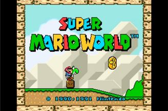

Super Mario World
Sucessor do genial Super Mario Bros.3, Super Mario World tornou possível uma série de elementos de jogo tecnicamente inviáveis no antigo NES, como transparências, rotação e zoom de sprites. Com a na época incrível quantidade de 96 estágios, o jogo propunha todo o tipo de desafios e passagens secretas que um jogador poderia querer.
The Legend of Zelda: A Link to the Past

Uma das maiores obras-primas 16-bits, The Legend of Zelda: A Link to the Past ainda hoje domina os debates sobre ser o melhor título da série The Legend of Zelda. Sua aventura épica do início ao fim, bem como seu sistema de jogo serviram de inspiração para vários títulos lançados durante a era 16-bits. Ainda hoje a saga de Link inspira jogadores no mundo inteiro.